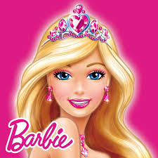

In the dazzling land of Glitterland, there lived a special Barbie named Crystal. One day, she found a portal to Dreamlandia, a magical place full of candy and dreams. Crystal discovered that the Dream Sprites, who granted wishes, needed help because a shadow creature had stolen their Dream Crystal.
Bravely, Crystal embarked on a quest to retrieve the Dream Crystal. Along the way, she made friends, solved challenges, and outsmarted the shadow creature. Eventually, she reached the heart of Dreamlandia, rescued the Dream Crystal, and returned it to the grateful Dream Sprites.
In gratitude, the Dream Sprites granted Crystal a wish. Instead of wishing for herself, Crystal selflessly wished for the happiness of everyone in Glitterland and Dreamlandia. Her wish transformed both realms, spreading joy everywhere.
Returning to Glitterland, Crystal became a legendary figure celebrated for her bravery and kindness. Her story, as the Barbie who brought happiness to two magical worlds, became a cherished tale in Glitterland. And whenever she looked in the enchanted mirror, Crystal saw not just a Barbie but a symbol of the magic that happens when one follows their heart.